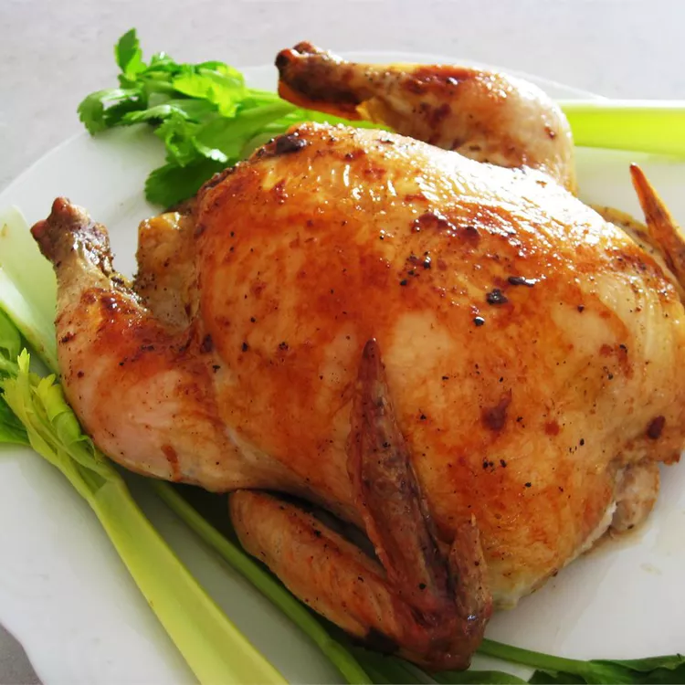

Roasted Chicken Recipe

Description
Roasted chicken is a classic and delicious dish that features a whole chicken cooked to perfection. The chicken is seasoned with herbs, spices, and sometimes stuffed with aromatic ingredients to enhance its flavor. Roasting chicken in the oven results in juicy meat with crispy and flavorful skin. It is a versatile dish that can be served as the main course for family dinners or special occasions.
Ingredients
- Whole chicken
- Olive oil or melted butter
- Salt and pepper
- Herbs and spices (such as thyme, rosemary, paprika, garlic powder, and onion powder)
- Optional stuffing ingredients (such as lemon slices, garlic cloves, or herbs)
Steps
- Preheat the oven to the appropriate temperature (usually around 375-425°F or 190-220°C).
- Prepare the chicken by removing any giblets, rinsing it thoroughly, and patting it dry with paper towels.
- Season the chicken generously with salt, pepper, and the desired herbs and spices, both inside and outside the cavity.
- If using stuffing ingredients, stuff the cavity with lemon slices, garlic cloves, herbs, or any other preferred ingredients.
- Place the seasoned chicken on a roasting rack in a roasting pan. You can also place it directly on a baking sheet lined with aluminum foil.
- Drizzle the chicken with olive oil or melted butter, which helps to keep the meat moist and enhances browning.
- Roast the chicken in the preheated oven for the required time, usually around 20 minutes per pound (450 grams). Ensure the internal temperature reaches 165°F (75°C) for safe consumption.
- Once cooked, remove the chicken from the oven and let it rest for a few minutes before carving. This helps to retain the juices and ensures a more tender result.
- Carve the roasted chicken into desired portions and serve it with your favorite side dishes. Enjoy!